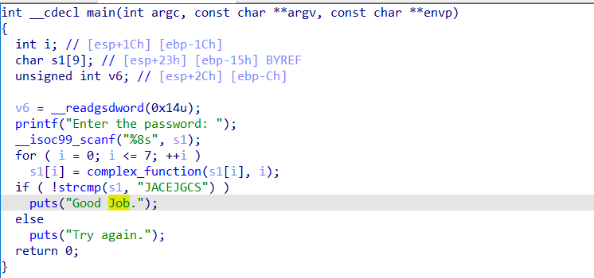
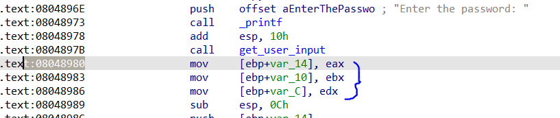
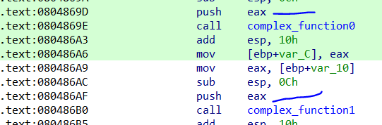

Angr学习1，一些简单的用法：
符号执行 理解：输入的不是特定的字符，而是一个符号（可以理解为：x），每执行一步，就记录下执行的条件（此为执行）。遇到分支语句，就分为两个方程，分别对应不同的路线，这样程序执行完之后，就得到了一群方程，想要那一条路径，就分析哪一串方程。
相当于就是用方程的形式，历遍了所有的路径，最后根据需要去解出对应路径的方程，得到答案。
Angr使用 基本结构 创建项目 1 project = angr.Project("./00_angr_find" , auto_load_libs=False )
angr的二进制装载组件是CLE ，它负责装载二进制对象（以及它依赖的任何库），angr将这些包含在Project类中。
uto_load_libs：是否载入依赖库，默认是true，一般设置为false，好处是不会去分析lib中的函数，减少时间，缺点是无法分析外部函数
设置状态(state) 1 initial_state = project.factory.entry_state()
entry_state()：做一些初始化工作，然后在 程序的 入口停下
state代表程序的一个实例镜像，模拟执行某个时刻的状态，就类似于快照 。保存运行状态的上下文信息。
保留每一步的条件。
设置 Simulation Managers（模拟管理器） 1 simulation = project.factory.simgr(initial_state)
Project 对象表示程序一开始的样子，而在执行时，我们实际上是对SimState对象 进行操作，她模拟执行某个时刻的状态
探索路径 1 2 print_good_address = 成功地址 simulation.explore(find=print_good_address)
获取执行结果 1 2 3 4 if simulation.found: solution_state = simulation.found[0 ] solution = solution_state.posix.dumps(sys.stdin.fileno()) print ("[+] Success! Solution is: {}" .format (solution.decode("utf-8" )))
通过simgr.found来访问所有符合条件的分支，这里我们为了解题，就选择第一个符合条件的分支即可 （found[0]）
sys.stdin.fileno()：
在UNIX中，按照惯例，三个文件描述符分别表示标准输入、标准输出和标准错误
1 2 3 4 5 6 7 >>> import sys>>> sys.stdin.fileno() 0 >>> sys.stdout.fileno()1 >>> sys.stderr.fileno()2
所以可以写为
1 solution = solution_state.posix.dumps(0 )
题目：00_angr_find 
这里find的目标地址可以是
这里的所有地址，但不能是跳转到这个代码块的地址，因为有可能不会跳
1 2 3 4 5 6 7 8 9 10 11 12 13 14 15 16 17 18 from angr import *import sysp = Project("00_angr_find" , auto_load_libs = False ) init_state = p.factory.entry_state() simulation = p.factory.simgr(init_state) simulation.explore(find=0x8048675 ) if simulation.found: solution_state = simulation.found[0 ] print (solution_state.posix.dumps(0 ))
angr 重写了一些 libc 的函数，比如获取 stdin 数据，会返回符号量，用于符号执行
在某个状态下可以使用state1.posix.dumps(0) 获取进入该状态时 stdin 需要输入的数据
posix 表示终点状态中存储的系统接口信息，然后通过dumps函数来导出系统输入
题目：01_angr_avoid 注意：不要直接在ida的字符串界面找地址，这时的地址不一定是text段的地址 ，angr跑不出来
1 2 3 4 5 6 7 8 9 10 11 12 13 14 15 from angr import *import sysp = Project("./01_angr_avoid" ) init_state = p.factory.entry_state() simulation = p.factory.simgr(init_state) simulation.explore(find=0x80485E0 , avoid=0x80485F2 ) if simulation.found: solution_init = simulation.found[0 ] print (solution_init.posix.dumps(0 )) print (solution_init.posix.dumps(1 ))
explore函数的原型，这里只用到find avoid
1 def explore (self, stash='active' , n=None , find=None , avoid=None , find_stash='found' , avoid_stash='avoid' , cfg=None ,um_find=1 , **kwargs ):
当一个状态和avoid中的条件匹配时，它就会被放进avoided stash中，之后继续执行。
题目：02_angr_find_condition ida分析可以看到有多处的成功和提示标语
一般手段没有得到结果，这里采用新的方法，根据回显进行判断
1 2 3 4 5 6 7 8 9 10 11 12 13 14 15 16 17 18 19 20 21 22 23 24 25 26 from angr import *import sysp = Project("./02_angr_find_condition" , auto_load_libs = False ) init_state = p.factory.entry_state() simulation = p.factory.simgr(init_state) def IsSuccess (state ): std_out = state.posix.dumps(1 ) if b'Good Job.' in std_out: return True else : return False def IsFalse (state ): std_out = state.posix.dumps(1 ) if b'Try again.' in std_out: return True else : return False simulation.explore(find=IsSuccess, avoid=IsFalse) if simulation.found: init_solution = simulation.found[0 ] print (init_solution.posix.dumps(0 ))
动态state 在原来是判断地址的地方，改成了两个函数的回显
1 2 3 4 5 6 7 8 9 10 11 12 def IsSuccess (state ): std_out = state.posix.dumps(1 ) if b'Good Job.' in std_out: return True else : return False def IsFalse (state ): std_out = state.posix.dumps(1 ) if b'Try again.' in std_out: return True else : return False
引入一个函数来对状态进行检测，是为了实现动态的选择想获取的state。
题目：03_angr_symbolic_registers 这题在于，ida中看到
输入三个十六进制数，然后有三个复杂的函数进行数学运算，最后进行比较得到答案
原来解法：完全可以行得通
1 2 3 4 5 6 7 8 9 from angr import *p = Project("./03_angr_symbolic_registers" , auto_load_libs = False ) simulation = p.factory.simgr(p.factory.entry_state()).explore(find=0x80489E6 , avoid=0x80489D4 ) if simulation.found: print (simulation.found[0 ].posix.dumps(0 ))
但是这里因为angr在处理复杂格式的字符串scanf()输入 的时候不是很好，我们可以直接将符号之注入寄存器，也就是主要学会符号化寄存器 ，先分析函数

看到输入进了这三个寄存器，所以这里直接对他下手
1 2 3 4 5 6 7 8 9 10 11 12 13 14 15 16 17 18 19 20 21 22 23 24 25 26 27 28 29 30 31 32 33 34 35 from angr import *import sysimport claripyp = Project("./03_angr_symbolic_registers" , auto_load_libs = False ) start_addr = 0x8048980 init_state = p.factory.blank_state(addr = start_addr ) pawd_size = 32 pawd_0 = claripy.BVS('pawd_0' , pawd_size) pawd_1 = claripy.BVS('pawd_1' , pawd_size) pawd_2 = claripy.BVS('pawd_2' , pawd_size) init_state.regs.eax = pawd_0 init_state.regs.ebx = pawd_1 init_state.regs.ecx = pawd_2 def issu (state ): if b"Good Job." in state.posix.dumps(1 ): return True else : return False def isfa (state ): if b'Try again.' in state.posix.dumps(1 ): return True else : return False simulation = p.factory.simgr(init_state).explore(find = issu, avoid = isfa) if simulation.found:
位向量(bitvector) 1 2 3 4 pawd_size = 32 pawd_0 = claripy.BVS('pawd_0' , pawd_size) pawd_1 = claripy.BVS('pawd_1' , pawd_size) pawd_2 = claripy.BVS('pawd_2' , pawd_size)
使用claripy通过BVS()方法生成三个位向量，此方法有两个参数：第一个是angr用来引用位向量的名称，第二个是位向量本身的大小（以位为单位，好像字节也可以）。
1.符号位向量是angr用于将符号值注入程序的数据类型 。
2.通过 BVV(value,size) 和 BVS( name, size) 接口创建位向量，也可以用 FPV 和 FPS 来创建浮点值和符号
访问寄存器 1.通过 state.regs 对象的属性访问以及修改寄存器的数据
1 2 3 init_state.regs.eax = pawd_0 init_state.regs.ebx = pawd_1 init_state.regs.ecx = pawd_2
既修改了initial_state之前创建的内容，并更新寄存器的内容
接下来就是定义explore的参数了
约束求解 通过使用state.solver.eval(symbol)对各个断言进行评测来求出一个合法的符号值（若有多个合法值，返回其中的一个）【就是对所选路径的方程进行求解】
1 2 3 4 5 solution0 = format (solution_state.solver.eval (passwd0), 'x' ) solution1 = format (solution_state.solver.eval (passwd1), 'x' ) solution2 = format (solution_state.solver.eval (passwd2), 'x' ) solution = solution0 + " " + solution1 + " " + solution2 print ("[+] Success! Solution is: {}" .format (solution))
根据给出的方式，可以解出前两个数据，但是解不出第三个数；发现是网上教程的寄存器最后一个设置错误
改正后得到答案
题目：04_angr_symbolic_stack 先跑简单脚本
1 2 3 4 5 6 7 8 from angr import *p = Project("./04_angr_symbolic_stack" , auto_load_libs = False ) simulation = p.factory.simgr(p.factory.entry_state()).explore(find=0x80486e9 , avoid=0x80486d7 ) if simulation.found: print (simulation.found[0 ].posix.dumps(0 ))
成功得到输入
符号化栈上的值 看到汇编

这里显然通过栈来把输入传进函数
思路还是
1 2 3 4 5 6 7 8 9 10 11 12 13 14 15 16 17 18 19 20 21 22 23 24 25 26 27 28 29 30 31 32 33 34 35 36 37 38 39 40 41 42 from angr import *import sysfrom claripy import *p = Project("./04_angr_symbolic_stack" , auto_load_libs = False ) start_addr=0x8048697 init_state = p.factory.blank_state(addr = start_addr) init_state.regs.ebp = init_state.regs.esp size = 32 pawd0 = BVS('pawd1' , size) pawd1 = BVS('pawd2' , size) para_size = 8 init_state.regs.esp -= para_size init_state.stack_push(pawd0) init_state.stack_push(pawd1) simulation = p.factory.simgr(init_state) def issu (state ): if b'Good Job.' in state.posix.dumps(1 ): return True else : return False def isfa (state ): if b'Try' in state.posix.dumps(1 ): return True else : return False simulation.explore(find=issu, avoid=isfa) if simulation.found: solution_state = simulation.found[0 ] s1 = solution_state.solver.eval (pawd0) s2 = solution_state.solver.eval (pawd1) print (s1,s2)
模拟栈 1 2 3 4 5 6 7 8 9 10 11 12 13 14 15 init_state.regs.ebp = init_state.regs.esp size = 32 pawd0 = BVS('pawd1' , size) pawd1 = BVS('pawd2' , size) para_size = 8 init_state.regs.esp -= para_size init_state.stack_push(pawd0) init_state.stack_push(pawd1)
需要注意的就是要保证堆栈平衡，模仿的要像才行
关于eval
solver.eval(expression) 将会解出一个可行解solver.eval_one(expression)将会给出一个表达式的可行解，若有多个可行解，则抛出异常。solver.eval_upto(expression, n)将会给出最多n个可行解，如果不足n个就给出所有的可行解。solver.eval_exact(expression, n)将会给出n个可行解，如果解的个数不等于n个，将会抛出异常。solver.min(expression)将会给出最小可行解solver.max(expression)将会给出最大可行解
题目：05_angr_symbolic_memory 看到题目，找到find和avoid，简单方法：
1 2 3 4 5 6 7 8 9 from angr import *p = Project("05_angr_symbolic_memory" , auto_load_libs = False ) simulation = p.factory.simgr(p.factory.entry_state()).explore(find=0x8048672 , avoid=0x8048660 ) if simulation.found: print (simulation.found[0 ].posix.dumps(0 ))
符号化内存实际上就是利用angr接口，把值直接写道内存里
1 2 3 4 5 6 7 8 9 10 11 12 13 14 15 16 17 18 19 20 21 22 23 24 25 26 27 28 29 30 31 32 33 34 35 36 37 38 39 40 41 42 43 44 45 46 from angr import *import sysfrom claripy import *p = Project("05_angr_symbolic_memory" , auto_load_libs = False ) start_addr = 0x8048601 init_state = p.factory.blank_state(addr=start_addr) size = 64 in0 = BVS('in0' , size) in1 = BVS('in1' , size) in2 = BVS('in2' , size) in3 = BVS('in3' , size) in0_addr = 0xA1BA1C0 init_state.memory.store(in0_addr, in0) init_state.memory.store(in0_addr+8 , in1) init_state.memory.store(in0_addr+8 +8 , in2) init_state.memory.store(in0_addr+8 +8 +8 , in3) def issu (sta ): if b'Good Job.\n' in sta.posix.dumps(1 ): return True else : return False def isfa (sta ): if b'Try' in sta.posix.dumps(1 ): return True else : return False simulation = p.factory.simgr(init_state).explore(find=issu, avoid=isfa) if simulation.found: solution_init = simulation.found[0 ] s0 = solution_init.solver.eval (in0, cast_to=bytes ) s1 = solution_init.solver.eval (in1, cast_to=bytes ) s2 = solution_init.solver.eval (in2, cast_to=bytes ) s3 = solution_init.solver.eval (in3, cast_to=bytes ) print (s0,s1,s2,s3)
根据ida分析，这次的输入是存在了64位大小的内存中，所以
1 2 3 4 5 6 in0_addr = 0xA1BA1C0 init_state.memory.store(in0_addr, in0) init_state.memory.store(in0_addr+8 , in1) init_state.memory.store(in0_addr+8 +8 , in2) init_state.memory.store(in0_addr+8 +8 +8 , in3)
state.memory 的 load(addr, size) / store(addr, val) 接口读写内存, size 以 bytes 为单位
题目：06_angr_symbolic_dynamic_memory 简单方法得到flag
1 2 3 4 5 6 7 from angr import *p = Project('./06_angr_symbolic_dynamic_memory' , auto_load_libs = False ) simulation = p.factory.simgr(p.factory.entry_state()).explore(find=0x804875e , avoid=0x804874c ) if simulation.found: print (simulation.found[0 ].posix.dumps(0 ))
模拟动态内存 1 2 3 4 5 6 7 8 9 10 11 12 13 14 15 16 17 18 19 20 21 22 23 24 25 26 27 28 29 30 31 32 33 34 35 36 37 38 39 40 41 42 43 44 from angr import *from claripy import *import sysp = Project('./06_angr_symbolic_dynamic_memory' , auto_load_libs = False ) start_addr = 0x8048699 init_state = p.factory.blank_state( addr=start_addr ) size = 64 in1 = BVS('in1' , size) in2 = BVS('in2' , size) fake_heap1 = 0xffffc93c malloc_ptr1 = 0xabcc8a4 fake_heap2 = 0xffffc94c malloc_ptr2 = 0xabcc8ac init_state.memory.store(malloc_ptr1, fake_heap1, endness=p.arch.memory_endness) init_state.memory.store(malloc_ptr2, fake_heap2, endness=p.arch.memory_endness) init_state.memory.store(fake_heap1, in1) init_state.memory.store(fake_heap2, in2) def issu (state ): if b'Good' in state.posix.dumps(1 ): return True else : return False def isfa (state ): if b'Try' in state.posix.dumps(1 ): return True else : return False simulation = p.factory.simgr(init_state).explore(find=issu, avoid=isfa) if simulation.found: solution_init = simulation.found[0 ] s1 = solution_init.solver.eval (in1, cast_to=bytes ) s2 = solution_init.solver.eval (in2, cast_to=bytes ) print (s1,s2)
分析程序，输入存放在一块malloc出来的空间里，所以这块空间的地址是不一定的，但是angr并没有真正“运行”二进制文件 （至少到目前为止），它只是在模拟 运行状态，因此它实际上不需要将内存分配到堆中，实际上可以伪造任何地址。
思路：分析汇编，看一下malloc的地址的指针是什么，然后改写这个指针，让她指向指定的空间，因为没有实际运行，所以空间的地址随便，不是会用到的就行
1 2 3 4 5 6 7 8 9 10 11 12 13 14 15 16 17 size = 64 in1 = BVS('in1' , size) in2 = BVS('in2' , size) fake_heap1 = 0xffffc93c malloc_ptr1 = 0xabcc8a4 fake_heap2 = 0xffffc94c malloc_ptr2 = 0xabcc8ac init_state.memory.store(malloc_ptr1, fake_heap1, endness=p.arch.memory_endness) init_state.memory.store(malloc_ptr2, fake_heap2, endness=p.arch.memory_endness) init_state.memory.store(fake_heap1, in1) init_state.memory.store(fake_heap2, in2)
大小端序 参数 endness 用于设置端序，angr默认为大端序，总共可选的值如下：
1 2 3 LE – 小端序(little endian, least significant byte is stored at lowest address) BE – 大端序(big endian, most significant byte is stored at lowest address) ME – 中间序(Middle-endian. Yep.)
题目：07_angr_symbolic_file 1 2 3 4 5 6 7 8 9 10 11 12 13 14 15 16 17 18 19 20 21 22 23 24 25 26 27 28 29 30 31 32 33 34 from angr import *from claripy import *import sysp = Project("./07_angr_symbolic_file" , auto_load_libs = False ) start_addr = 0x80488EA init_state = p.factory.blank_state(addr = start_addr) filename = "OJKSQYDP.txt" in_size = 64 pawd = BVS('pawd' , in_size) pawd_file = storage.SimFile(filename, content = pawd, size = in_size, ) init_state.fs.insert(filename, pawd_file) def issu (state ): if b'Good' in state.posix.dumps(1 ): return True else : return False def isfa (state ): if b'Try' in state.posix.dumps(1 ): return True else : return False simulation = p.factory.simgr(init_state).explore(find=issu, avoid=isfa) if simulation.found: solution_init = simulation.found[0 ] print (solution_init.solver.eval (pawd, cast_to = bytes ))
分析ida得知，本题是由从文件中读取密码，然后进行判断，这里主要是用angr来模拟文件输入
1 2 3 4 5 6 7 filename = "OJKSQYDP.txt" in_size = 64 pawd = BVS('pawd' , in_size) pawd_file = storage.SimFile(filename, content = pawd, size = in_size, ) init_state.fs.insert(filename, pawd_file)
状态插件（state plugin) 1.所有存储在SimState中的东西实际上都存储在附加在state上的“插件”中。几乎所有state的属性 都是一个插件——memory、registers、mem、regs、solver等等。
2.例如：memory插件模拟平坦的地址空间。
3.state.memory和state.registers实际上是同一个插件的不同实例，因为寄存器也是用一块地址空间模拟的。
说白了就是在地址模拟的基础上开发出了不同的插件，来简化angr语法
仿真文件系统-The Emulated Filesystem 1.angr中与文件系统，套接字，管道或终端的任何交互的根源都是SimFile对象。
SimFile 1.SimFile是一种存储抽象，定义符号或其他形式的字节序列。
2.可以从某个位置读取文件；在某个位置写入文件；询问文件中当前存储了多少字节；具体化文件，并为其生成测试用例。
1 simgr_file = angr.storage.SimFile(filename, content=xxxxxx, size=file_size)
之后就需要将其传递给init_state，利用fs.insert方法进行插入
1 initial_state.fs.insert(filename, simgr_file)